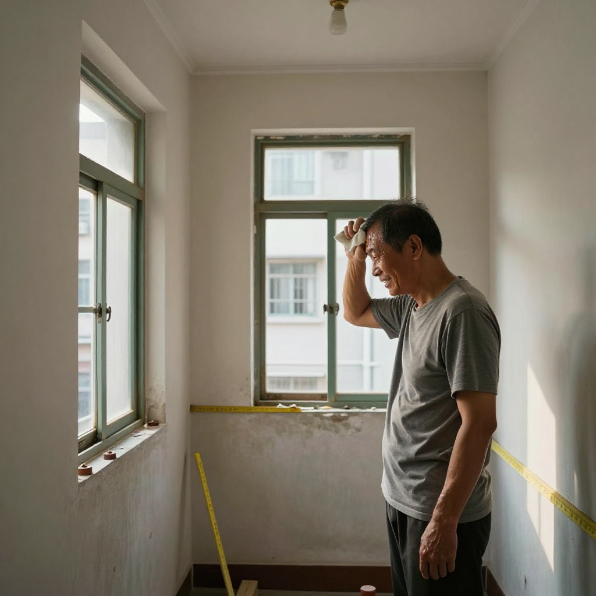
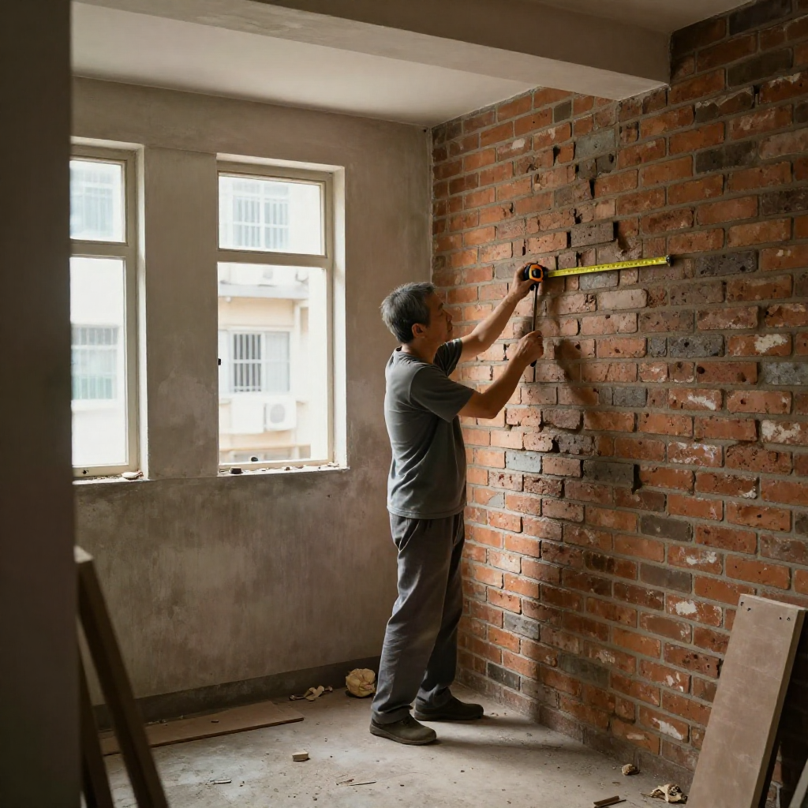
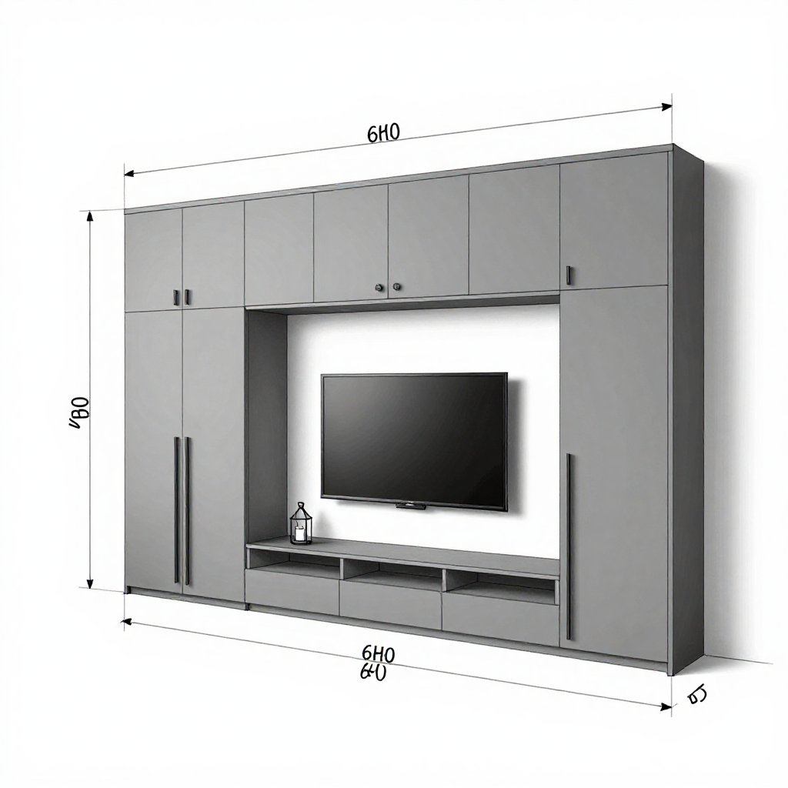
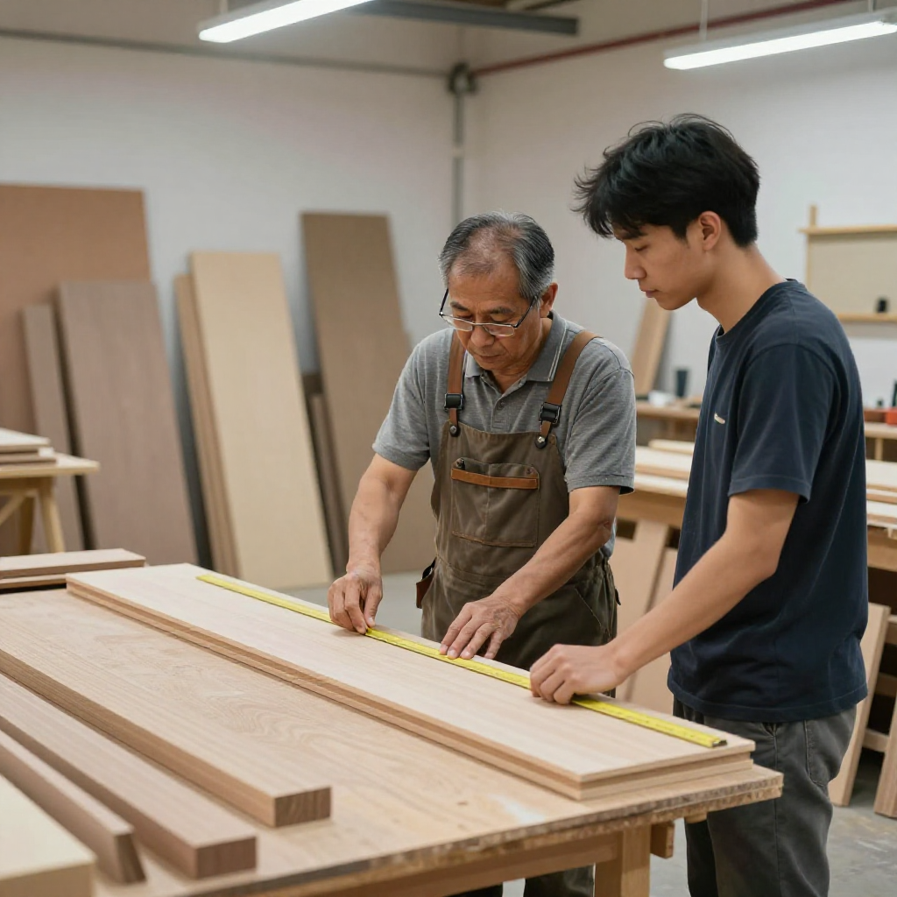
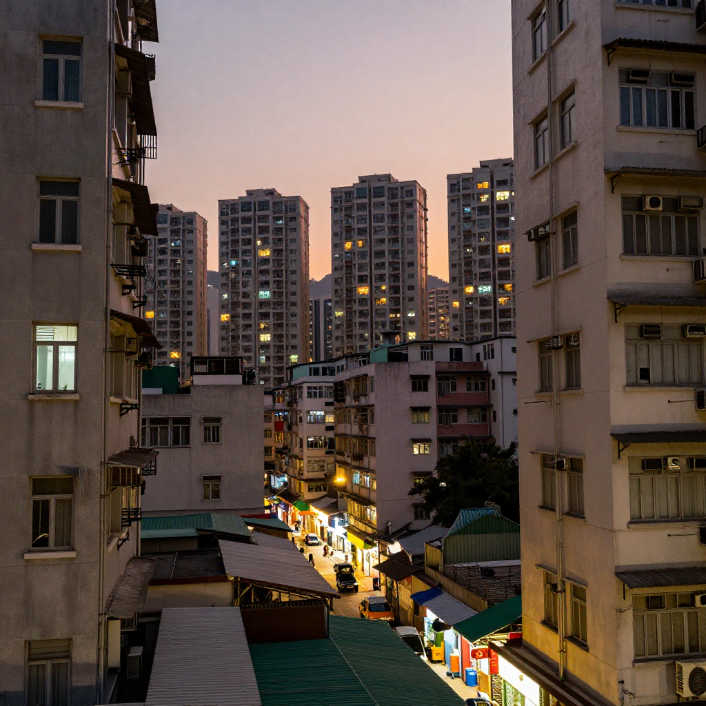

場景：石硖尾唐楼｜主訪：陳徒弟（二十八年全屋定制）｜記錄：張丹楓｜整理：雲蕾｜日期：2026年9月27日｜WhatsApp 報價：852 5190 2328
清晨七点，仔仔起身准备返学，我已经在石硖尾嘅旧楼单位度做紧野。呢度係楼龄四十年嘅唐楼，楼层高度得八尺半，唔够三米，但係我哋有办法。
「陈师傅，呢个厅咁窄，电视柜点样摆先唔会逼？」嚟紧係二十年老客户阿芬，佢老公走得早，一个人凑大个女，现在个女结婚买咗间二手楼，终于搵到我帮佢搞新居。
我用手袖抹了抹额头上嘅汗，笑了笑：「芬姐，你信我，柜唔係越做越大就越好，係要识得分寸。」
我喺呢行做咗二十八年喇。由九几年喺上环做学徒开始，跟过三个师父，最老嘅一个係台山阿伯，今年八十三，唔知仲喺唔喺世。佢教我：「木係有命嘅嘢，你呃佢，佢就呃你。」
我由细木工做到全屋定制，由手工榫卯做到而家嘅模块组合，越来越觉得自己唔够胆话完全识嘢。

阿芬间厅真係细，三百几尺，不过佢话想摆多啲嘢——电视、音响、杂物柜、仲有老公生前锺意嘅字画。我望咗望幅墙，度了度内心数，然后画咗个草图。
「芬姐，电视柜点做好？」
「电视柜唔好做到贴晒两边牆，中间要留返呼吸位。颜色用哑面灰，唔好反光，一反光就逼。你话想摆多嘢，我明白，但係柜嘅哲学就係——留白先至是最贵。」
「但係我真係需要储物——」
「我知。所以我帮你设计一个C字形电视柜，中间空嘅位摆电视，两边做高柜，储物够用，睇落又唔会死沉沉。柜门唔好用明拉手，整嵌入式嘅，手指一抠就开，安全又襟睇。」

呢个时候，我个徒弟阿伟嚟咗，佢九五后，书冇读几多，但係手眼几灵，几年前跟我学整柜。阿伟一嚟就问我：「陈师傅，呢隻板係唔係算错数？开料开到1035，图纸写1000。」
我行过去望咗望，敲咗敲那块板，然后话：「唔使改。你信我，呢个位系做反 claw cabinet，背板要入去成35，先至可以食得住牆。香港啲牆就係咁样，九几年起嘅楼，牆身偏差成两三分，好多后生仔唔明，接到就要减尺，烦到死。」
「但係客会闹㗎嘛，话点解做大了。」
「咁就睇你点解释。你话係你错，唔关啲牆事，客就信你。你话係牆错，客就闹你——其实都係你错，不过你要识包庇啲牆。」
阿伟笑到嘴歪，话：「陈师傅你真係老海了。」
「唔係老海，就係经验。香港呢个地方，寸金尺土，间间楼都唔同，冇话边样係百分百啱。你要学嘅唔係点样跟图纸，就係点样跟现场。图纸係死的，现场係生嘅。」

下午三点，柜嘅雏形出咗嚟。芬姐嚟睇，一睇就笑：「陈师傅，衰咗衰咗，你做嘅嘢真係唔同，睇落阔落咗好多！」
我笑笑，话：「唔係我叻，就係帮你留返口气。」
临走前，我帮佢调节埋啲门铰，试试开关顺唔顺，然后执正咗个角位——嗰处有少少唔正，我用砂纸磨咗磨，唔留痕迹。
「陈师傅，你真係好细心。」
「细心唔係优点，就係饭碗。你估下，我九几年做学徒嗰阵，一个月几钱？一千八。而家徒弟叫得做呢行，几千银都话辛苦。唔细心，点顶？」
落楼嗰阵，我望咗望石硖尾嘅天际线，唐楼、旧铺、公屋，全部挤喺埋一齐。香港就係咁，唔够位就夹，夹唔落就諗计。我做呢行咁多年，就係学识一样嘢——唔好同个空间犟，你要顺住佢，再慢慢改你佢。
琴晚老婆问我几时退休，我话做到行唔郁为止。佢话我：「你就係劳碌命。」
我话：「唔係劳碌，就係锺意。」
每做好一个柜，客人开心，我就开心。呢个就係我陈徒弟喺香港做全屋定制二十八年嘅理由——简单，纯嘢。

陈徒弟讲：香港家居普遍细过三百尺，如果将所有墙身都塞满柜，整体睇落会好逼，有压迫感。留白唔系嘥空间，就係俾个厅有呼吸位。实际设计时，可以用「C形」或「L形」布局，关键位留空，储物量不变，但空间感大得多。颜色方面，哑面比光面更唔显局促——光面会反光，一反光就显细。
陈徒弟经验：九几年起嘅唐楼，墙身偏差经常有两三分（约3-5mm），唔少系因为当年建筑标准松。所以量尺唔系睇图纸就算，一定要去现场用水平尺逐幅墙度，仲要敲墙听声——实心砖同空心砖声音差好远。见到偏差位，要主动话俾客人知，唔系等到安装先话「做大了」，客人就会闹你。
陈徒弟认为：最紧要系「跟现场唔跟图纸」。图纸係设计师画嘅，但现场係师傅落手做嘅，两样永远有出入。第二个重点系「识包庇啲墙」——出问题唔好话系墙错，要话系自己经验唔够，所以预先留咗位。客人要嘅系解决方案，唔系解释。做到呢两样，自然有回头客。
本文配圖均為 AI 場景示意圖，僅供場景參考，並非真實工地照片或業主影像。
想知你個單位裝修要幾錢？
一鍵 WhatsApp 張丹楓